tmpad
This all started when I realized my 25$ korg nanopad was busted. I started looking around at getting something a bit more robust and noticed very quickly that this type of equipment is really expensive. So before diving in and paying for something I decided to try my hand at creating one myself.
Goals:
- pressure sensitivity
- keep it simple
- low price
- use materials on hand
Breaking ground
How does one make a low cost velocity sensitive button? I struggled with this one for a while. My brother and I spent an hour or so whiteboarding ideas and iterating through them to their ends. In one such iteration we realized that blocking the path of light would be perfect. Not only would it provide a ramp in voltage, but would also eliminate any complicated machinery.
Thankfully due to some previous experimentation with infrared (IR) touchscreens (and the bad decision to buy parts at RadioShack) I had some IR emitters/detectors laying around. 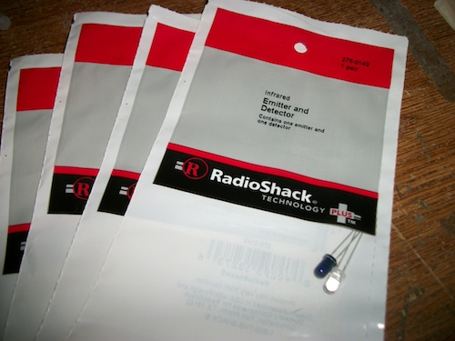
Now came the real problem. How do you block the path of light in a consistant manner without setting up guides, pivots, or etc... We went through nearly every possibility we could think of.
Put the detector in the button
This method required a flap cut in paper that allowed the detector to pass through and complete the circut. This caused an argument about the durability of the paper and the precision required to keep the button in line.
Have 2 digital bumper switches that detect on and off
A decent solution, but this still required an actual button with the physical constraits of following a path without pitching.
Use a spring and some rubber
The idea here is simple:
- tape/screw a spring to a thin block of wood
- mount rubber bumpers on edges
- create side walls to mimimize horizontal travel
- mount the emitter/detector to the floor of the rig
First prototype
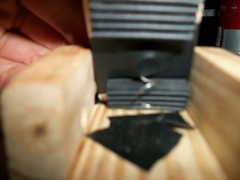 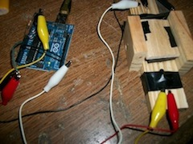 So we built it, and what do you know.. it works! I hooked it up to an arduino uno that was laying around and in a few minutes we were reading the voltage off of the IR detector.
So you may be asking, "how does this even work?". Well, basically the spring keeps the wood button elevated away from the floor by ~1/4 of an inch. In that gap, the infrared is able to pass cleanly under the button and be detected on the other side. When pressing the button the gap is closed and the circuit is broken.
Problems
While this solution worked rather well, it was prone to bouncing around (it was attached to a spring after all!). Also, pressing the button off center caused the button to tilt and while it worked it felt really flimsy.
Second prototype
We decided to iterate. Based on the problems we noticed in the first prototype, we set forth to conquer the button once and for all. Unfortunately this was harder than it seemed. There was some head banging and then we once again, did the simplest thing imaginable.
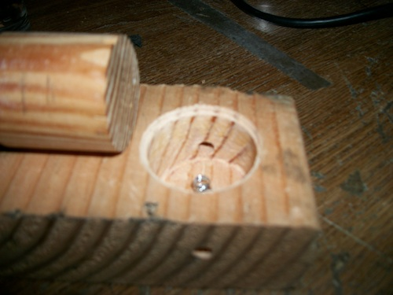
As you can see this looks nothing like a real mpc/drumpad. It does however, function as expected.. for the most part. one of the first things we noticed is that the wood on wood action actually caused pinching if you didn't press directly in the center. That pinching caused the button not to return to its natural position. We continued on...
Third prototype (aka fingertrap)
Using the foam from the inside of a macbook box we stumbled upon a discovery. Apparently, this foam (probably because it is black) absorbs all of the IR and can actually cause the circut to be broken! After testing this on on my desk we made a prototype.
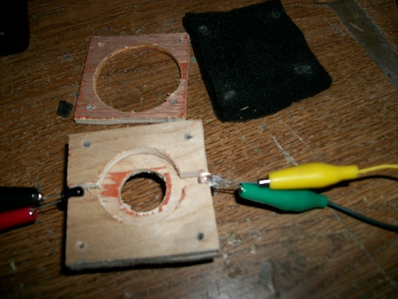 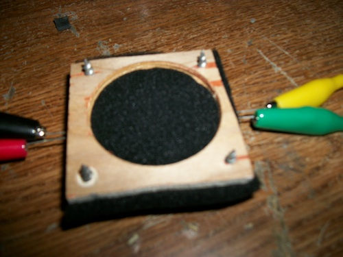
So this works really well, infact it works so well we kept stabbing ourselves with the poorly located screws. At this stage we hooked this thing up with node-midi and were actually playing a note in ableton! Very exciting, but we were not quite there.
Fourth prototype
It was time to get serious. We sketched out a plan on the whiteboard and got to work! 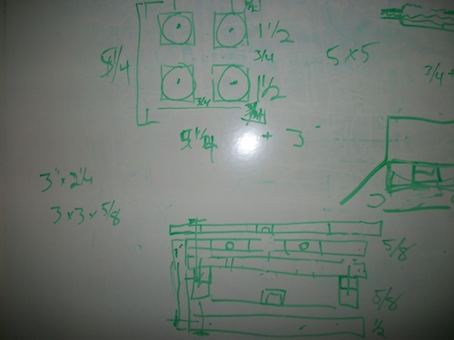
Top and middle plates 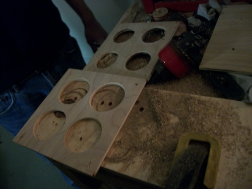
Stacked to give an idea as to what we are going for.. 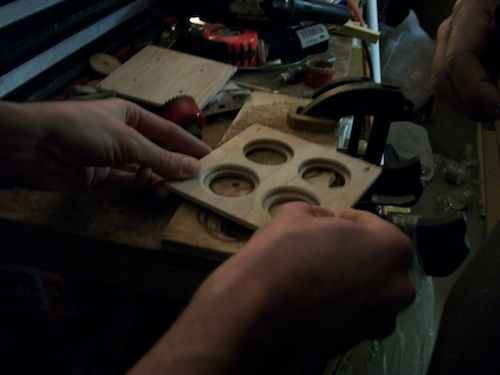
Added slots in the middle plate to hold the leds and drill some holes through the bottom plate for the led leads 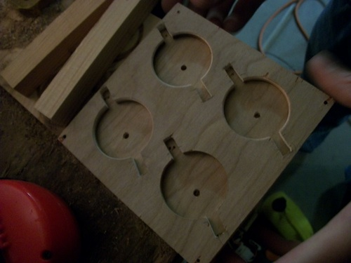
Push the leads of the leds through the holes and bend the leds into position 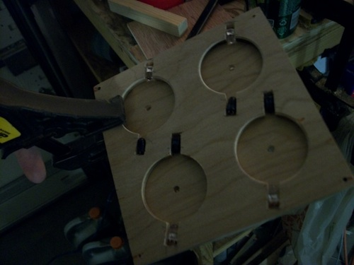
Add the foam layer

Screw it all together with drywall screws.. it's a prototype!

Solder it all together. Sorry to make any EE's out there cry, but since we're only powering 4 leds I figured it would be safe to have them on all of the time. Anyhow, color codes here are:
- red - 3.0v
- black - ground
- green - signal (these go to the arduino analog inputs A0-A3)
Test each connection, fortunately there were no problems (barring underpowered the leds) the first time around! 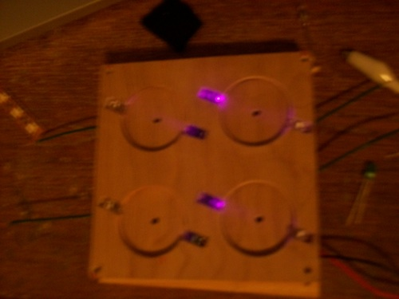
And connect it to the arduino! 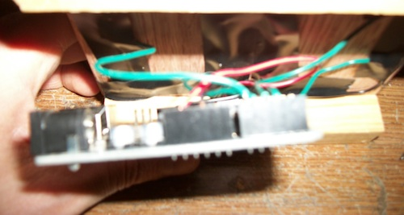 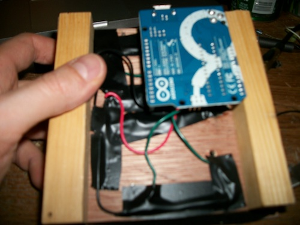Modify the code to support 4 buttons instead of 1 and begin composing some hardcore brostep! 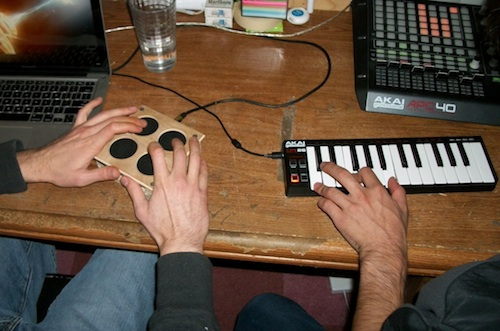
Code
This page and source code can be found on github
Contact
follow my brother (@R_H_2) and I (@tmpvar) on twitter.
Custom builds
If you think you just can't live without one of these and want us to build you one, send me an email (tmpvar@gmail.com) and we'll work something out.